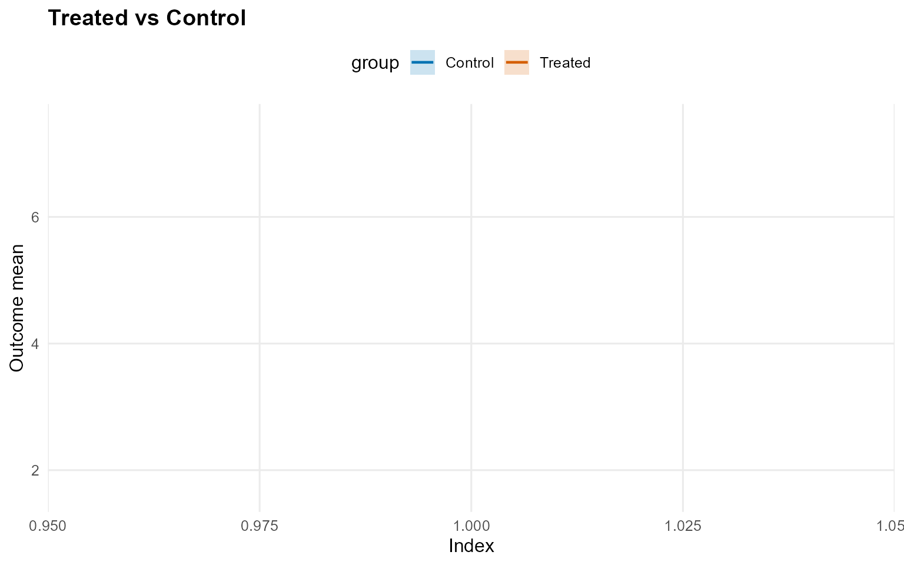
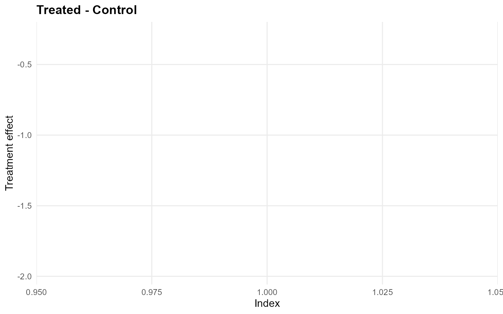
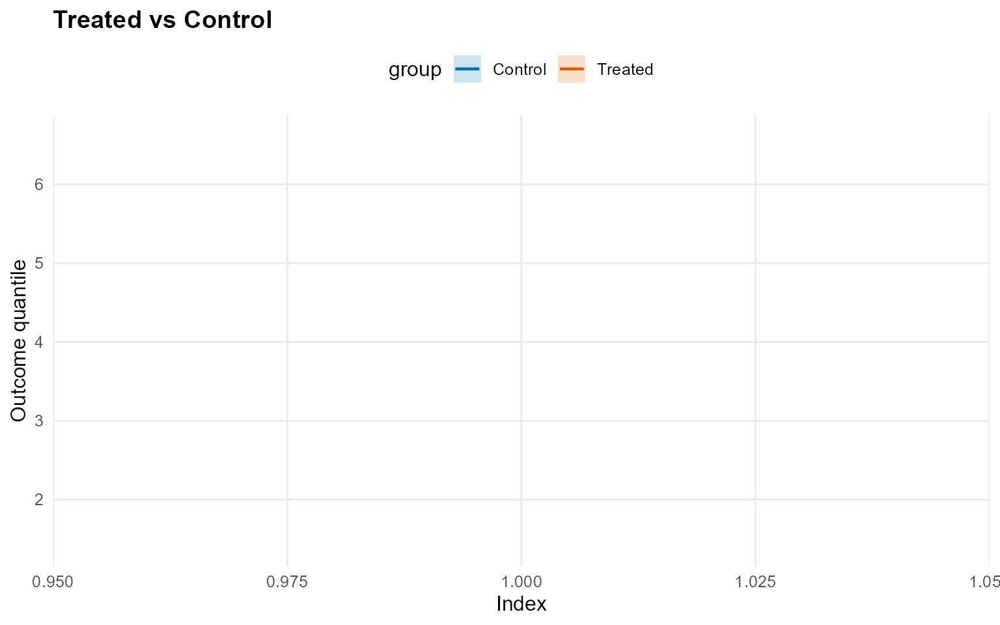
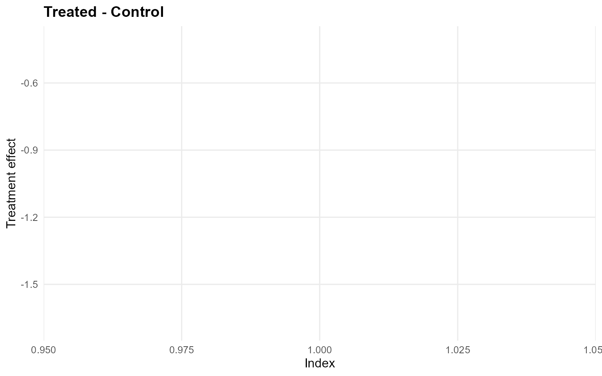
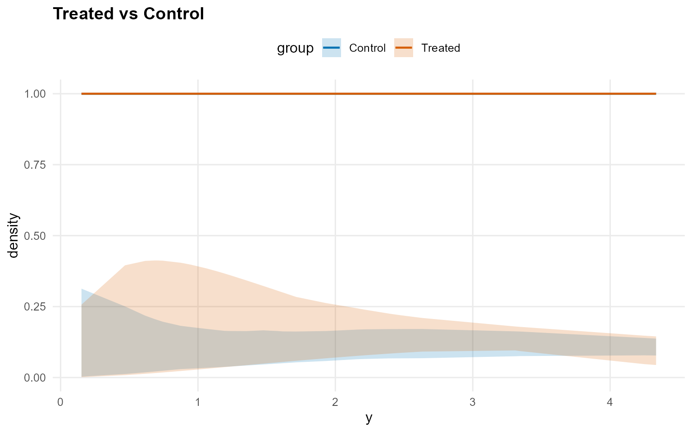
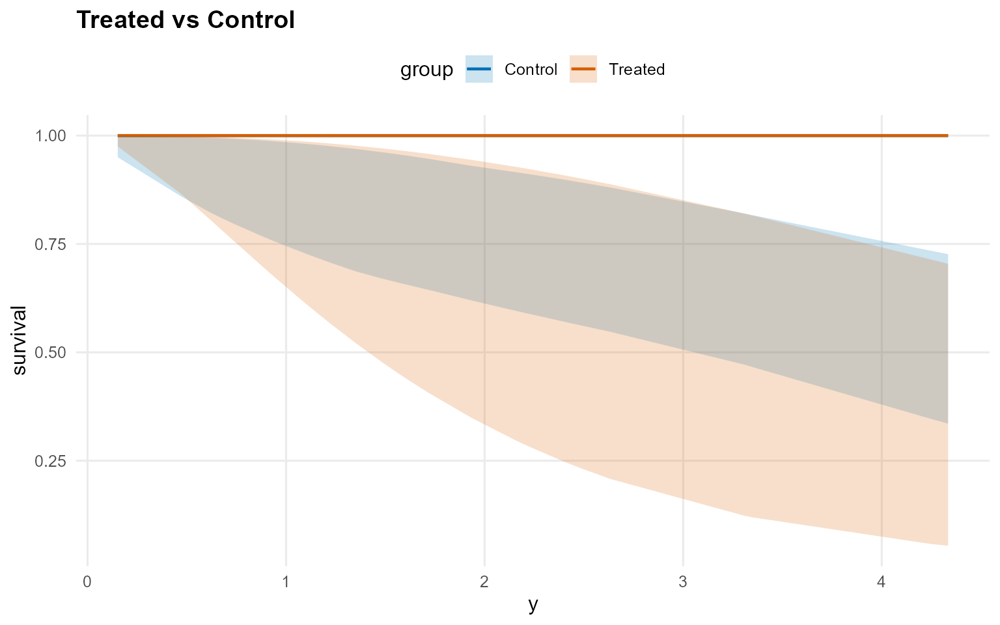
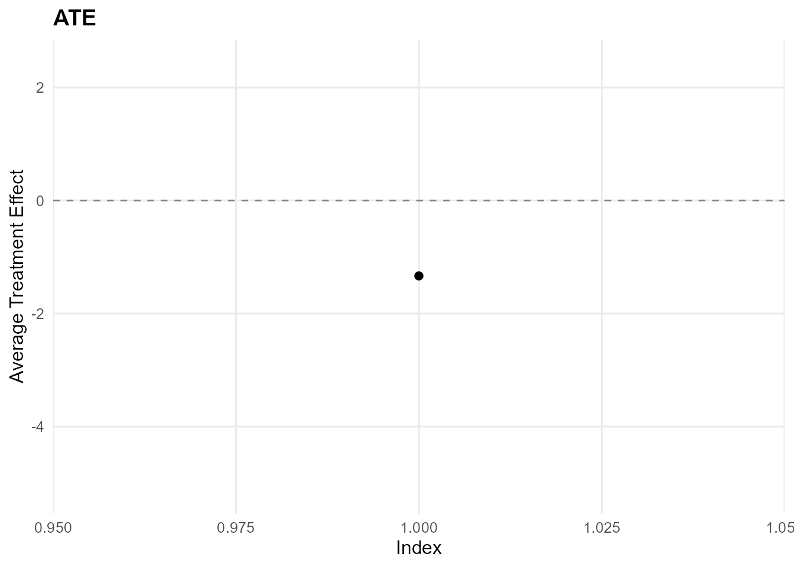
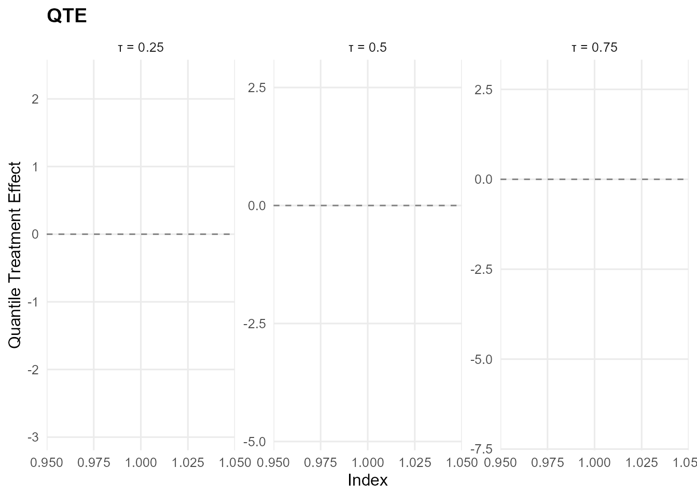

14. Causal Inference: No X (CRP) - Gamma Kernel
Source:vignettes/cookbook/v14-causal-no-x-CRP.Rmd
v14-causal-no-x-CRP.RmdCookbook vignette (for the website / historical notes). These files may not match the current exported API one-to-one. Last verified: 2026-01-18.
For the up-to-date workflow, see the main package vignettes (Introduction, Model Spec, MCMC Workflow, Unconditional/Conditional/Causal, Backends, S3 Reference).
Theory (brief)
The causal model fits separate outcome distributions for treated and control arms. Without covariates, the estimands reduce to contrasts between two unconditional DP mixtures (optionally with GPD tails).
Causal Inference: No Covariates (CRP)
This vignette fits two no-X causal models where the treatment arms are modeled independently using unconditional outcome models.
- Model A: CRP bulk-only (GPD = FALSE)
- Model B: CRP with GPD tail (GPD = TRUE)
Data Setup (No X)
data("causal_alt_real500_p4_k2")
y <- abs(causal_alt_real500_p4_k2$y) + 0.01
T <- causal_alt_real500_p4_k2$T
summary_tbl <- tibble(
statistic = c("N", "Mean", "SD", "Min", "Max"),
value = c(length(y), mean(y), sd(y), min(y), max(y))
)
summary_tbl %>%
mutate(value = signif(value, 4)) %>%
print()
[38;5;246m# A tibble: 5 × 2
[39m
statistic value
[3m
[38;5;246m<chr>
[39m
[23m
[3m
[38;5;246m<dbl>
[39m
[23m
[38;5;250m1
[39m N 500
[38;5;250m2
[39m Mean 1.43
[38;5;250m3
[39m SD 1.08
[38;5;250m4
[39m Min 0.012
[4m6
[24m
[38;5;250m5
[39m Max 8.10
u_threshold <- as.numeric(stats::quantile(y, 0.8, names = FALSE))
y_eval <- y[1:40]Model A: CRP Bulk-only (Gamma)
bundle_crp_bulk <- build_causal_bundle(
y = y,
T = T,
X = NULL,
kernel = "gamma",
backend = "crp",
PS = FALSE,
GPD = FALSE,
components = 6,
mcmc_outcome = list(niter = 300, nburnin = 80, nchains = 1, thin = 1, seed = 1)
)
bundle_crp_bulkDPmixGPD causal bundle
PS model: disabled
Outcome (treated): backend = crp | kernel = gamma
Outcome (control): backend = crp | kernel = gamma
GPD tail (treated/control): FALSE / FALSE
components (treated/control): 6 / 6
Outcome PS included: FALSE
epsilon (treated/control): 0.025 / 0.025
n (control) = 232 | n (treated) = 268
fit_crp_bulk <- quiet_mcmc(run_mcmc_causal(bundle_crp_bulk))
summary(fit_crp_bulk)
-- Outcome fits --
[control]
MixGPD fit | backend: Chinese Restaurant Process | kernel: Gamma Distribution | GPD tail: FALSE
n = 232 | components = 6 | epsilon = 0.025
MCMC: niter=300, nburnin=80, thin=1, nchains=1
Fit
Use summary() for posterior summaries; plot() for diagnostics; predict() for predictions.
[treated]
MixGPD fit | backend: Chinese Restaurant Process | kernel: Gamma Distribution | GPD tail: FALSE
n = 268 | components = 6 | epsilon = 0.025
MCMC: niter=300, nburnin=80, thin=1, nchains=1
Fit
Use summary() for posterior summaries; plot() for diagnostics; predict() for predictions.
pred_mean_bulk <- predict(fit_crp_bulk, type = "mean", interval = "credible", nsim_mean = 150)
head(pred_mean_bulk) ps estimate lower upper
[1,] NA -1.31 -1.97 -0.282
plot(pred_mean_bulk)

pred_q_bulk <- predict(fit_crp_bulk, type = "quantile", p = 0.5, interval = "credible")
head(pred_q_bulk) ps estimate lower upper
[1,] NA -1.14 -1.69 -0.41
plot(pred_q_bulk)

pred_d_bulk <- predict(fit_crp_bulk, y = y_eval, type = "density", interval = "credible")
head(pred_d_bulk) y ps trt_estimate trt_lower trt_upper con_estimate con_lower con_upper
1 0.900 NA 1 0.0241 0.402 1 0.0303 0.181
2 1.352 NA 1 0.0435 0.342 1 0.0423 0.164
3 1.148 NA 1 0.0346 0.373 1 0.0364 0.167
4 1.932 NA 1 0.0678 0.262 1 0.0582 0.164
5 3.344 NA 1 0.0932 0.179 1 0.0756 0.162
6 0.949 NA 1 0.0261 0.397 1 0.0314 0.178
plot(pred_d_bulk)
pred_surv_bulk <- predict(fit_crp_bulk, y = y_eval, type = "survival", interval = "credible")
head(pred_surv_bulk) y ps trt_estimate trt_lower trt_upper con_estimate con_lower con_upper
1 0.900 NA 1 0.690 0.992 1 0.764 0.988
2 1.352 NA 1 0.521 0.977 1 0.687 0.969
3 1.148 NA 1 0.594 0.984 1 0.719 0.979
4 1.932 NA 1 0.349 0.944 1 0.620 0.930
5 3.344 NA 1 0.120 0.816 1 0.467 0.817
6 0.949 NA 1 0.671 0.991 1 0.755 0.987
plot(pred_surv_bulk)
ATE (Average Treatment Effect)
Prediction points: 1
Conditional (covariates): NO
Propensity score used: NO
Posterior mean draws: 150
Credible interval: credible (95%)
ATE estimates (treated - control):
id estimate lower upper
1 -1.333 -5.16 2.468
summary(ate_bulk)ATE Summary
==================================================
Prediction points: 1
Conditional: NO | PS used: NO
Posterior mean draws: 150
Interval: credible (95%)
Model specification:
Backend (trt/con): crp / crp
Kernel (trt/con): gamma / gamma
GPD tail (trt/con): NO / NO
ATE statistics:
Mean: -1.333 | Median: -1.333
Range: [-1.333, -1.333]
Credible interval width:
Mean: 7.628 | Median: 7.628
Range: [7.628, 7.628]
ate_plots_bulk <- plot(ate_bulk)
ate_plots_bulk$treatment_effect
QTE (Quantile Treatment Effect)
Prediction points: 1
Quantile grid: 0.25, 0.5, 0.75
Conditional (covariates): NO
Propensity score used: NO
Credible interval: credible (95%)
QTE estimates (treated - control):
index id estimate lower upper
0.25 1 -0.47 -2.932 2.316
0.5 1 -1.14 -4.81 2.712
0.75 1 -1.904 -7.04 2.83
summary(qte_bulk)QTE Summary
==================================================
Prediction points: 1 | Quantiles: 3
Quantile grid: 0.25, 0.5, 0.75
Conditional: NO | PS used: NO
Interval: credible (95%)
Model specification:
Backend (trt/con): crp / crp
Kernel (trt/con): gamma / gamma
GPD tail (trt/con): NO / NO
QTE by quantile:
quantile mean_qte median_qte min_qte max_qte sd_qte
0.25 -0.47 -0.47 -0.47 -0.47 NA
0.5 -1.14 -1.14 -1.14 -1.14 NA
0.75 -1.904 -1.904 -1.904 -1.904 NA
Credible interval width:
Mean: 7.546 | Median: 7.521
Range: [5.248, 9.87]
qte_plots_bulk <- plot(qte_bulk)
qte_plots_bulk$treatment_effect
Model B: CRP with GPD Tail (Gamma)
param_specs_gpd <- list(
gpd = list(
threshold = list(
mode = "dist",
dist = "lognormal",
args = list(meanlog = log(max(u_threshold, .Machine$double.eps)), sdlog = 0.25)
)
)
)
bundle_crp_gpd <- tryCatch({
build_causal_bundle(
y = y,
T = T,
X = NULL,
kernel = "gamma",
backend = "crp",
PS = FALSE,
GPD = TRUE,
components = 6,
param_specs = param_specs_gpd,
mcmc_outcome = list(niter = 300, nburnin = 80, nchains = 1, thin = 1, seed = 2)
)
}, error = function(e) {
message("Skipping CRP + GPD example: ", conditionMessage(e))
NULL
})
supports_crp_gpd <- !is.null(bundle_crp_gpd)
if (supports_crp_gpd) bundle_crp_gpd
if (isTRUE(supports_crp_gpd)) {
fit_crp_gpd <- quiet_mcmc(run_mcmc_causal(bundle_crp_gpd))
summary(fit_crp_gpd)
}
if (isTRUE(supports_crp_gpd)) {
pred_mean_gpd <- predict(fit_crp_gpd, type = "mean", interval = "credible", nsim_mean = 150)
head(pred_mean_gpd)
plot(pred_mean_gpd)
}
if (isTRUE(supports_crp_gpd)) {
pred_q_gpd <- predict(fit_crp_gpd, type = "quantile", p = 0.5, interval = "credible")
head(pred_q_gpd)
plot(pred_q_gpd)
}
if (isTRUE(supports_crp_gpd)) {
pred_d_gpd <- predict(fit_crp_gpd, y = y_eval, type = "density", interval = "credible")
head(pred_d_gpd)
plot(pred_d_gpd)
}
if (isTRUE(supports_crp_gpd)) {
pred_surv_gpd <- predict(fit_crp_gpd, y = y_eval, type = "survival", interval = "credible")
head(pred_surv_gpd)
plot(pred_surv_gpd)
}
if (isTRUE(supports_crp_gpd)) {
ate_gpd <- ate(fit_crp_gpd, interval = "credible", nsim_mean = 150)
print(ate_gpd)
summary(ate_gpd)
}